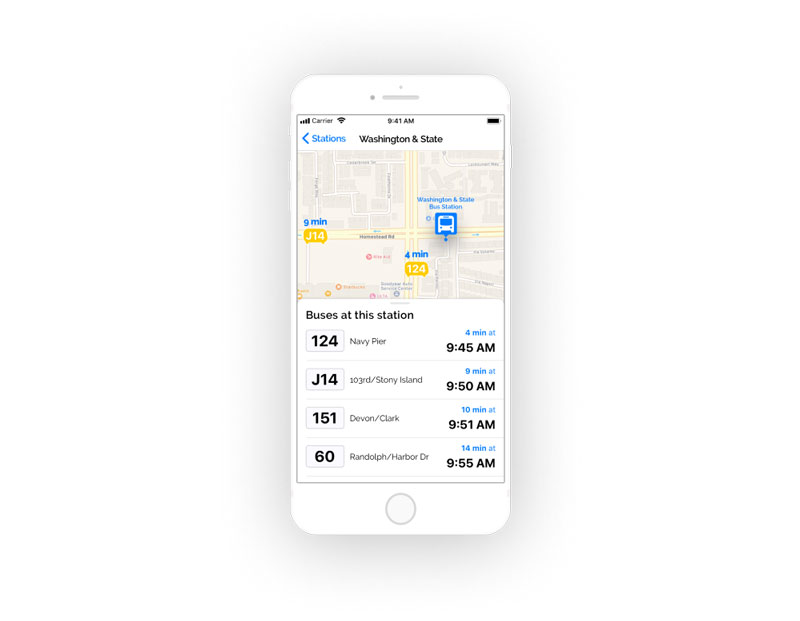

Spil is a cloud storage solution for creators and planners
VIEW PROTOTYPE
THE SITUATION
Inspired by the success of services like Google Drive, Dropbox and Pinterest, my client aimed to take the best of today’s cloud storage tools, and turn them into tomorrow’s necessity. To do that, they needed a brand and a design that would make their solution a seamless addition to the modern influencer’s toolkit.
MY TAKE
My research indicated that cloud storage users are split across multiple cloud storage services that only partially address their needs. I saw an opportunity for a simple and easy-to-use service, that integrates with existing tools and offers organization, editing and collaboration for spreadsheets, planning documents and projects.
MY ROLE
UX Design
UI Design
Branding
DELIVERABLES
Competitive analysis
User research
Personas
User stories
User flows
Wireframes
Usability testing
Logo
Style guide
HiFi prototype
User testing
Preference testing
TOOLS
Sketch
InVision
Figma
Let's take a look at how we got there
1
COMPETITIVE ANALYSIS
My work began with an analysis of the biggest players in the cloud storage game: Google, Dropbox and Pinterest.
I learned that today’s solutions assume content storage, organization and sharing, but fail to deliver on all the details. My analysis pointed to an opportunity to create a tool that would combine Google’s intuitive user flows with Dropbox’s clean interface and Pinterest’s board and link sharing.
| Interface | Intuitive | Minimalist | Photo-driven |
| Integration with Google suite |  |
 |
|
| Optimized for small businesses | |
|
|
| Household name for sharing ideas | |
|
|
| Intuitive organizational features | |
|
|
| Optimized for professional tasks | |
|
|
SWOT Analysis
2
USER RESEARCH
Next, I surveyed current cloud storage users to understand what services they used and how they prioritized features. I learned that my survey respondents are active cloud storage users, prefer Google Drive’s service, and frequently store trip and event-planning documents.
-
72%
access their cloud storage daily
-
96%
use Google Drive for their cloud storage needs
-
 76%
76%store trip- and event-planning documents
Survey Results
3
PERSONAS
My survey data then informed the creation of two personas for my ideal cloud storage solution: The Planner and The Juggler.
-
PAUL, THE PLANNER
Male / Age 36 / LA-based Project Manager
“A little planning goes a long way when you want to make great memories”The Planner
-
JULIA, THE JUGGLER
Female / Age 30 / Raleigh-based Designer
“I need tools that can keep up with me and all my spinning plates - from home and on the go”The Juggler
5
USER FLOWS
Borrowing from the simplicity and familiarity of the Google Drive solution, I then designed the user flows needed to summarize my high-priority user stories.
ALL FLOWS
6
WIREFRAMES
User flows in hand, I was ready to sketch some potential designs for my cloud storage application. I prioritized minimalism and simplicity, while addressing each of my user flows. I then translated my sketches into wireframes in Sketch and created a low-fidelity prototype for usability testing.


TAKE-AWAYS
Users expected to access their folders on the main dashboard in addition to the sidebar, so I made an additional folder tree available from the main dashboard.
Users were hesitant to click to open menus, so I updated all menus to appear on hover.
Users struggled to visualize the type of content that would be best displayed in board-form. To address this, I prioritized a view of real-life, detailed examples for the high-fidelity prototype.
ALL WIREFRAMES
7
BRANDING
Next, I turned my research to branding. My client required a name and an entirely new look and feel for their product. To begin, I analyzed the use of color, iconography, and tone by my competitors, and brainstormed branding themes. I explored many directions, including emphasizing the planning utility of the tool in the name, or claiming another container name like “drawer”, “bucket” and “wagon”. I then sketched logos for these options and iterated on my favorite themes.
Based on feedback from a sample of users and designers, I decided to focus on the name “Spil”. The name is short and sweet, easy to pronounce, and easy to remember. It alludes to the broader theme of sharing and collaborating on ideas, and invites a visual design that incorporates painting and other creative projects. I sketched additional logo options to refine my ideas, and vectorized my favorites.
I decided on a simple logo, with only the Spil name, featured in Montserrat and accompanied by a single spilled drop of paint. Finally, I documented my finalized logos, alongside my typeface and color choices, in my Spil Style Guide.
SPIL STYLE GUIDE
-
LOGO


-
PRIMARY COLORS
-
ACCENT COLOR
Full style guide
8
HIGH-FIDELITY PROTOTYPE
Now came the hard work of marrying my wireframes with my branding efforts and creating a high-fidelity mockup for Spil. This iteration allowed me to test my branding decisions with real users, who detailed the specific changes they needed in order to intuitively manipulate my product.
TAKE-AWAYS
While menus appearing on hover helped users navigate their available actions, they indicated a preference for seeing primary actions as clear, obvious buttons. To address this, I pulled out the options to share, move and delete files as large buttons with tooltips that appear on hover.
While I initially used a slider to allow users to select their sharing permissions, users associated this form of toggle with a timeline. To address this, I updated the permissions selector to 3 large tab-style buttons.
Users expected to see an empty state when first logging into the tool. Due to time constraints, I opted to reserve this work for version 2.
VIEW PROTOTYPE
9
PREFERENCE TESTING
With improved clarity about the final look and feel of the product, I looked to my users once again for several key design decisions, such as selecting backgrounds for the welcome and sign-up pages.
TAKE-AWAYS
Users preferred clean designs with less graphics, which were often deemed distracting. I removed any background or additional patterns that did not serve an explicit purpose.
Users appreciated the professional feel of a well-selected photo. This feedback drove the final background selections for the homepage and sign-in screens.
Users valued continuity across the prototype in the selection of photos and graphics, so I selected and edited all background photos to appear in the same style and color theme.
TEST RESULTS
WRAPPING IT ALL UP
I reviewed my prototype over and over again until I had consistently incorporated all feedback. Finally, I had a version that I was proud to present to my client.
The core needs of a cloud storage product were complicated enough to execute in a clean UI - I knew this problem well from my research. But as I was trying to push the envelope and design a real improvement to the status quo, I found myself split between delivering the best cloud storage product, and the most innovative cloud storage product.
Unfortunately, this occasionally meant limiting the final presentation of core features like search, and at the same time, limiting my investment in designing additional real-world examples of the boards that would distinguish the product from its peers.
If I had more time, I would simulate entire workflows executed with Spil. These might include spelling out each step required to build one complete trip-planning board. In the future, I would begin by limiting the scope of my solution even more, and focus on one problem at a time. I could prioritize perfecting the file manager experience, and perhaps focus on a specific type of file or content.
This project made it clear that a narrow focus can always be expanded, but a disparate focus with many interdependencies is hard to narrow down.
Ready for another?
-

The Bridge
Product Design
Learn more
-

goBus
Product Design + Branding
Learn more